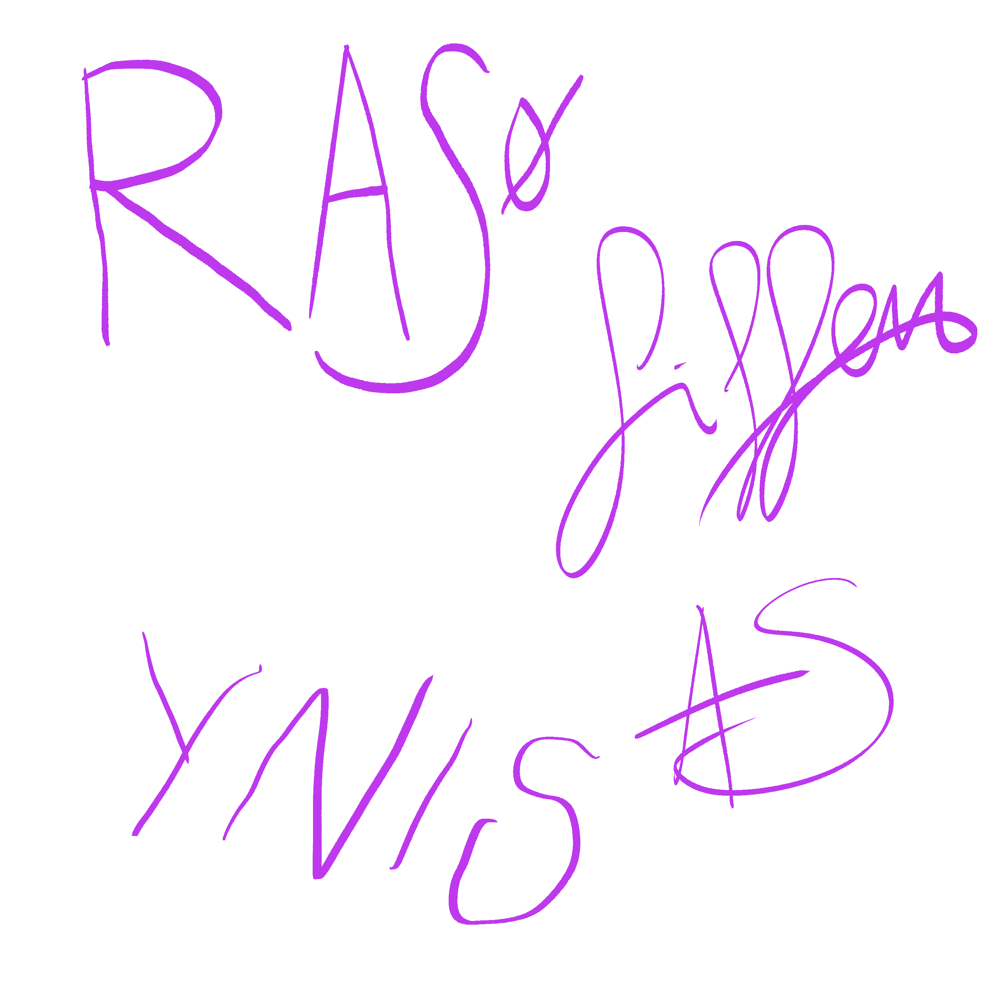

PÅ JOBB
Sveriges största hypotetiska pop- och rockorkester!
På jobb (/poː jɔbː/) är en hypotetisk svensk pop- och rockorkester, bildad i Vittsjö i Skåne under slutet av 2010-talet. Orkestern har varit verksam i olika konstellationer sedan 2018, men har trots återkommande planer ännu inte gett ut någon officiell inspelning. Bandet är framför allt känt för sina långvariga planer på att skriva, spela in och framföra musik, vilka på grund av praktiska hinder och olyckliga omständigheter förhindrats att göra så. På jobb hämtar inspiration från vardagliga situationer och företeelser och har i intervjuer bland annat nämnt missade bussar, kaffepauser och Palmeutredningen.
| Bakgrund | Vittsjö, Skåne |
|---|---|
| Genre | Hypotetisk rock |
| Aktiva | ca 2018– |
| Skivbolag | Bruno Wintzell Records |
| Webbplats | Pajobb.blogspot.tk |
| Medlemmar | Artisten själv Fiffen Ynis Rolph |
|
Signaturer
 |
|
Bildandet
På jobb bildades någon gång under slutet av 2010-talet i Vittsjö. De exakta omständigheterna kring bildandet är oklara, och orkesterns tidiga historia är endast ofullständigt dokumenterad. Under de första åren förekom flera planer på att börja skriva och spela in musik. Någon egentlig repertoar kom dock aldrig att etableras.
Planerna på musikvideon
Under 2021 hade På jobb långtgående planer på att producera och ge ut sin första musikvideo. Projektet befann sig enligt uppgift på ett relativt långt planeringsstadium, trots att orkestern vid denna tidpunkt ännu inte hade någon färdig låt att spela in. Planerna kom sedermera att skjutas upp. Några år senare lades planerna helt ned och i ett pressmeddelande hänvisade På Jobbs talesperson till Force Majeure. Den uteblivna musikvideon har i efterhand kommit att betraktas som en av de viktigaste händelserna i orkesterns historia.
Fortsatt verksamhet
Trots avsaknaden av utgivna inspelningar har På jobb fortsatt att existera i olika former. Nya planer på musik, inspelningar och framträdanden har återkommande uppstått, ofta med stor optimism i det inledande skedet. Genom åren har orkestern vidareutvecklat sina planeringsfokuserade arbetsmetoder som enligt orkestern hjälp dem skapa riktning och struktur i sina projekt.
Musik och influenser
Musikrecensenter har beskrivit På jobbs musik som hypotetisk, även om någon entydig genreklassificering är svår att göra. Orkestern själva säger sig vara inspirerade av kickoffer, projektverktyg och konferenser.